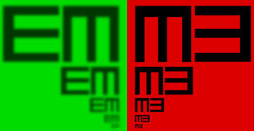
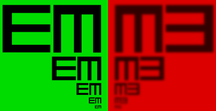

O teście
- Ten test polega na obserwacji czarności wzorów na tle zielonym i czerwonym.
- Prawidłowo widząca osoba powinna widzieć wzory na tle zielonym tak samo czarne jak wzory na tle czerwonym.
- Potrzebujesz około 1 minuty na skończenie tego testu.
Instrukcja
- Jeżeli korzystasz z okularów do czytania - załóż je aby sprawdzić prawidłowość ich korekcji.
- Zalecane jest słabo oświetlone pomieszczenie.
- Ustaw plansze by była na środku monitora.
- Ustań w odległości 5 - 6 metrów od monitora.
- Zasłoń jedno oko.
- Patrząc na plansze zaobserwuj na którym tle znaki są bardziej czarne.
- Wykonaj test dla każdego oka oddzielnie.
Nawigacja
- Zawsze możesz wrócić do tej instrukcji, testu i wyników.
Wynik badania
Kolor czerwony skupia się w innym punkcie oka niż kolor zielony.
- Prawidłowo widząca osoba widzi znaki na czerwonym i zielonym tle tak samo czarne.
- Jeżeli widziałeś znaki na tle czerwonym bardziej czarne niż na tle zielonym potrzebna jest ujemna korekcja. Jeżeli widziałeś znaki na tle zielonym bardziej niż czerwonym potrzebna jest dodatnia korekcja.
Dziękuje!
- Dziękuje za skorzystanie z testu. Mam nadzieje że okazał się pomocny.
- Jeżeli wykazał jakieś problemy to skontaktuj się z okulistą.
- Pamiętaj że ten test nie może zastąpić profesjonalnych badań.

